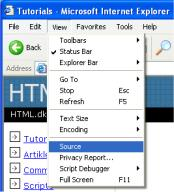

Lektion 15: Abschließende Hinweise
Herzlichen Glückwunsch! Sie haben die letzte Lektion erreicht.
Also weiß ich jetzt alles?
Sie haben viel gelernt und sind nun in der Lage, Ihre eigenen Webseiten zu erstellen. Aber sie haben nur die Grundlagen erlernt und es gibt noch einiges mehr, was gemeistert werden kann. Sie haben jetzt eine gute Grundlage, auf der Sie aufbauen können.
In dieser letzten Lektion, geben wir Ihnen noch ein paar abschließende Hinweise:
- Zu allererst, es ist eine gute Idee, die Ordnung und Struktur in Ihren HTML-Dokumenten beizubehalten. Übersichtlich erstellte Dokumente zeigen nicht nur anderen Ihre Kenntnisse in HTML, sondern erleichtern auch Ihnen nicht den Überblick zu verlieren.
- Halten Sie sich an die Standards und überprüfen Sie Ihre Seiten. Darauf kann man nicht oft genug hinweisen: Schreiben Sie sauberen XHTML-Code, benutzen sie eine DTD und validieren Sie Ihre Seiten unter validator.w3c.org.
- Füllen Sie Ihre Seite mit Inhalten. Denken Sie daran, dass HTML ein Werkzeug ist, welches Ihnen hilft, Informationen im Internet zu präsentieren. Sie müssen also dafür sorgen, dass Inhalte zum präsentieren vorhanden sind. Hübsche Seiten sehen gut aus, aber die meisten Menschen nutzen das Internet, um Informationen zu finden.
- Vermeiden Sie es, Ihre Seiten mit großen Bilddateien oder anderen Sachen, die Sie vielleicht im Internet gefunden haben, zu überladen. Es verlängert die Ladezeit der Seite und kann für Besucher sehr störend sein. Seiten, die mehr als 20 Sekunden zum laden brauchen, verlieren bis zu 50% ihrer Besucher.
- Melden Sie Ihre Seite bei Suchmaschinen und Webkatalogen an, sodass auch andere Leute und nicht nur der engste Familienkreis, Ihr Werk finden und genießen können. Auf den Startseiten der meisten Suchmaschinen finden Sie einen Link, um neue Seiten anzumelden. Die derzeit wichtigste ist wohl Google, aber es gibt auch noch andere, wie z.B. DMOZ, Yahoo, AltaVista, AlltheWeb und Lycos.
- In diesem Tutorial haben Sie gelernt, Notepad zu benutzen. Dieses ist ein einfacher und leicht zu bedienender Editor. Aber vielleicht finden Sie es hilfreich, einen fortgeschritteneren Editor zu nutzen, der Ihnen einen besseren Überblick und mehr Möglichkeiten bietet. Eine Zusammenfassung und Beschreibung verschiedener Editoren finden Sie bei Download.com (engl.).
Wie kann ich mehr lernen?
Zuerst einmal ist es wichtig, dass Sie weiterhin mit den im Tutorial gelernten Sachen arbeiten und experimentieren. Studieren Sie andere Webseiten und wenn Sie etwas finden was Ihnen gefällt, dann schauen Sie im Quellcode der Seite nach, wie es gemacht wurde. Einfach im Menü “Ansicht” des Browsers auf “Quellcode” klicken.

Suchen Sie im Internet nach Beispielen und Artikeln über HTML. Es gibt viele Webseiten mit guten Informationen darüber.
Lesen und fragen Sie in den Foren. Dort finden Sie wirkliche Experten, von denen Sie eine Menge lernen können.
Dann sollten Sie – wann immer Sie sich bereit dafür fühlen – beginnen, CSS mit unserem CSS-Tutorial zu lernen.
Alles was uns jetzt noch bleibt, ist Ihnen Spaß mit Ihrem neuen Freund HTML zu wünschen.
Auf Wiedersehen im Internet! :-)